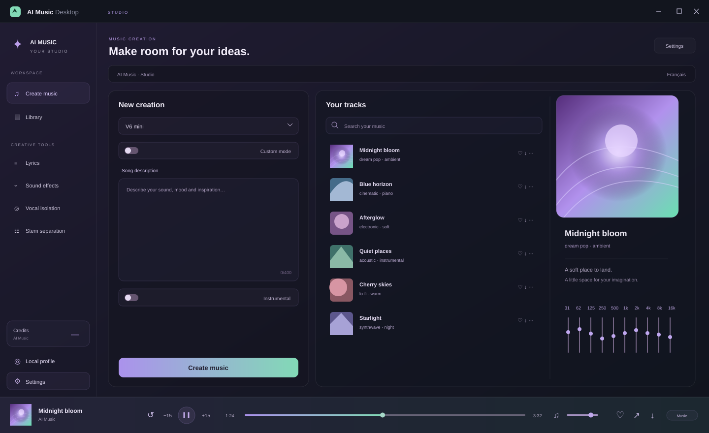

WINDOWS / v0.4.0 / AI MUSIC DESKTOP
Votre musique. Votre studio.
Un espace Windows pour créer avec AI Music, écouter vos morceaux et façonner votre son.
Windows x6410-band EQ32

01 / STUDIO
Un studio qui vous ressemble
02 / WINDOWS
Prêt à ouvrir votre studio ?
03 / INDEPENDENT